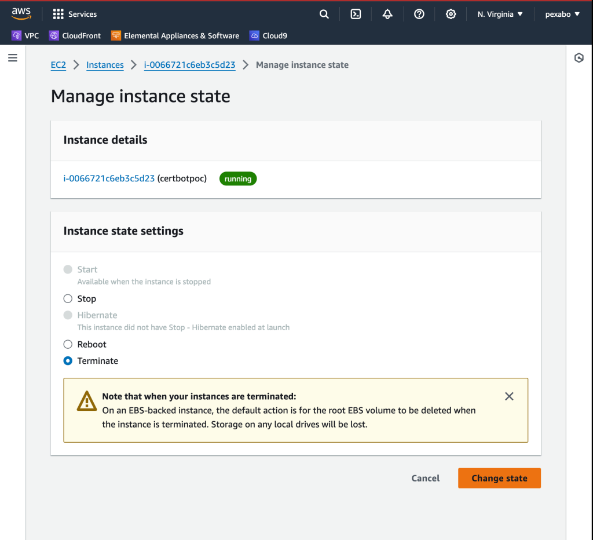

Creating a POC: Automating Video Transcriptions to Blog Posts, GitHub Repository Management, and SSL Certification with Certbot
Repo > https://github.com/rifaterdemsahin/certbot
Are you looking to streamline your workflow by converting video content into blog posts automatically, managing your projects effectively on GitHub, and securing your website with SSL certificates using Certbot? This blog post will guide you through setting up a Proof of Concept (POC) that achieves all these goals. By the end of this guide, you'll know how to turn videos into blog content, maintain a GitHub repository for your projects, and secure your web server with SSL certificates.
Step 1: Setting Up Automatic Transcription and Blogging
Objective: Convert video recordings into transcriptions and automatically publish them as blog posts on WordPress.
Tools Needed:
-
OBS (Open Broadcaster Software): For recording videos.
-
Transcription Service: Services like Otter.ai or a custom script using an API like Google Speech-to-Text to convert audio to text.
-
WordPress Account: To publish transcriptions as blog posts.
Implementation:
-
Record Videos: Use OBS to capture your content.
-
Transcribe Audio: Utilize a transcription service to convert the video’s audio into text format.
-
Automate Posting: Set up a script or use a WordPress plugin to automatically post these transcriptions to your blog.
-
Optimize Your Blog: Ensure that your WordPress blog is linked to your domain and properly indexed by search engines to maximize visibility.
Step 2: Creating a GitHub Repository for Your POC
Objective: Maintain a centralized repository for your project files and documentation.
Tools Needed:
-
GitHub Account: For hosting your code and documentation.
-
Git Client: Git Bash or GitHub Desktop for managing your repositories.
Implementation:
-
Create a New Repository: Start by creating a new repository on GitHub named, for example,
Certbot-POC. -
Initialize Locally: Use
git initto initialize the repository locally on your machine. -
Add Documentation: Create a
README.mdfile to describe your project’s purpose and keep it updated. -
Commit and Push: Commit your changes (
git commit -m "Initial commit") and push them to GitHub (git push -u origin main).
Step 3: Using Your WordPress Blog for Marketing Content
Objective: Leverage your WordPress blog to market your skills and share knowledge.
Tools Needed:
-
WordPress Blog: A platform to share your content.
-
Domain Registration: To establish your online presence with a personal domain.
Implementation:
-
Connect Your Blog to Your Domain: Ensure your blog is linked to a custom domain for better branding and searchability.
-
Regular Content Updates: Continuously update your blog with transcriptions, insights, and technical guides related to your projects.
-
SEO Best Practices: Use appropriate keywords and meta descriptions to enhance your blog’s visibility on search engines.
Step 4: Securing Your Website with SSL Certificates Using Certbot
Objective: Protect your web server with SSL certificates to ensure secure communication.
Tools Needed:
-
AWS Account: For hosting your server.
-
Ubuntu Server: To run your web server.
-
Certbot and Nginx: For obtaining and managing SSL certificates.
Implementation:
-
Launch an Ubuntu Server: Log in to your AWS account, and launch a new Ubuntu instance.
-
Configure Security Groups: Open necessary ports (80 for HTTP, 443 for HTTPS, and 22 for SSH) in your AWS security settings.
-
SSH into Your Server: Use SSH (
ssh -i <key-pair.pem> ubuntu@<server-ip>) to access your Ubuntu server. -
Install Nginx and Certbot: Update your server and install Nginx and Certbot (
sudo apt-get update -yfollowed bysudo apt-get install nginx certbot python3-certbot-nginx -y). -
Obtain SSL Certificates: Run Certbot to secure your server (
sudo certbot --nginx) and follow the prompts to complete the process. -
Verify SSL Installation: Ensure your SSL certificates are correctly installed by visiting your domain using HTTPS.
Step 5: Integrating Your Domain with DNS
Objective: Point your domain to your server’s IP address.
Tools Needed:
- DNS Management Interface: Such as AWS Route 53 or GoDaddy.
Implementation:
-
Access DNS Management: Log in to your domain management service.
-
Create an A Record: Set up an A record pointing your domain to your server’s public IP address.
-
DNS Propagation: Allow up to 24 hours for DNS changes to propagate fully.
Step 6: Automating and Documenting Your Processes
Objective: Automate repetitive tasks and maintain clear documentation for your POC.
Tools Needed:
-
GitHub: For version control.
-
Scripting Languages: Bash or Python for automation.
Implementation:
-
Maintain Documentation: Keep your GitHub repository updated with clear, detailed documentation explaining each step of your setup and configuration.
-
Automate Tasks: Write scripts to automate the transcription-to-blog process, checking for new videos and publishing transcriptions automatically.
Step 7: SEO and Content Optimization
Objective: Increase the reach and impact of your content through SEO.
Tools Needed:
- SEO Tools: Google Analytics, Yoast SEO plugin for WordPress.
Implementation:
-
Regular Updates: Keep your blog content fresh and relevant by regularly adding new posts and updates.
-
Analyze Traffic: Use SEO tools to track visitor metrics and optimize content accordingly.
-
Enhance Visibility: Apply SEO best practices to boost your blog’s ranking and attract more visitors.
By following these steps, you can create an efficient POC that not only demonstrates your technical skills but also enhances your online presence. Through effective use of transcription automation, GitHub repository management, SSL certification, and SEO strategies, you can streamline your workflow and market your abilities more effectively.
Feel free to share your experiences or any tips you have found useful in the comments below!
Dont Forget to terminate

🔗 Connect with me:
-
💼 LinkedIn: https://www.linkedin.com/in/rifaterdemsahin/
-
🐦 Twitter: https://x.com/rifaterdemsahin
-
🎥 YouTube: https://www.youtube.com/@RifatErdemSahin
-
💻 GitHub: https://github.com/rifaterdemsahin
Imported from rifaterdemsahin.com · 2024